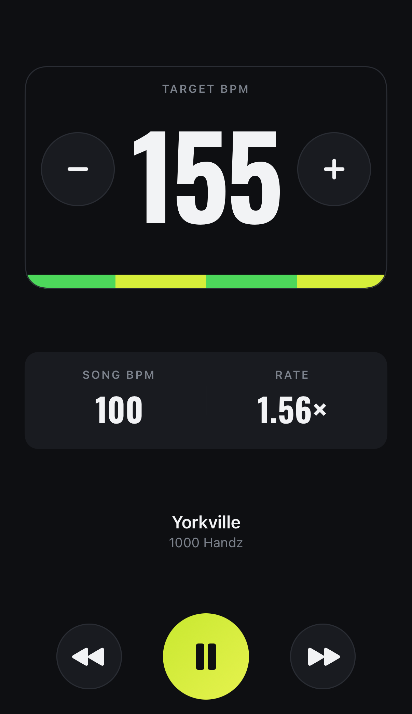
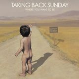
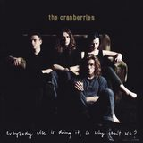
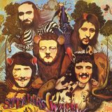
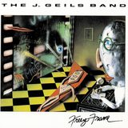
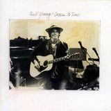

Run to your beat
Set a target BPM. Every song on your playlist gets matched to that beat, sped up to meet you, pitch intact.
Join the TestFlight betaFree while it's in beta. Works with Apple Music, or songs you own — not Spotify.

Connect Apple Music and pick a playlist, or bring MP3s and M4As of your own.
The cadence you actually run at. Most runners land somewhere between 150 and 170.
Every song stretches to meet that number. Pitch untouched, and adjustable mid-run.
The target BPM lives right on your lock screen. Tap + and the whole playlist climbs to meet you — no unlocking, no fumbling, no stopping.
Illustration of the lock-screen controls — try it
That was the part I didn't expect. When any song can meet your cadence, "running music" stops being a genre you tolerate and starts being the music you actually love. Records that were never remotely workout material turn out to be perfect — they just needed to arrive at the right tempo.
I never knew I could run to Neil Young.
— Brian, who built it
| Song | Song BPM | Target | Rate |
|---|---|---|---|
|
Green OnionsBooker T. & the M.G.'s
|
137 | 160 | 1.17× |
|
 A Decade Under the InfluenceTaking Back Sunday
|
156 | 160 | 1.03× |
|
 DreamsThe Cranberries
|
129 | 160 | 1.24× |
|
 Stuck in the Middle with YouStealers Wheel
|
124 | 160 | 1.29× |
|
 CenterfoldThe J. Geils Band
|
114 | 160 | 1.40× |
|
 Four Strong WindsNeil Young
|
108 | 160 | 1.48× |
SixThree songs recorded decades apart, one beat under your feet. The target column never moves — the app works out the rest. These BPMs are the app's own, measured from a real playlist.
Connect Apple Music and your playlists play at your cadence — nothing to download, nothing to convert. Everything else has to be a file you own. Green Onions cannot play Spotify, on any tier: those downloads are encrypted, and no third-party app is allowed to open them or change their speed. Apple Music is the one subscription that permits it.
Enough to take it out for a few runs before you decide. After that it's $9.99, once. The TestFlight beta is free while it lasts.
No account to make. Nothing to cancel.
One payment. Not a subscription.
No ads, ever. Built by one runner who wanted this to exist.